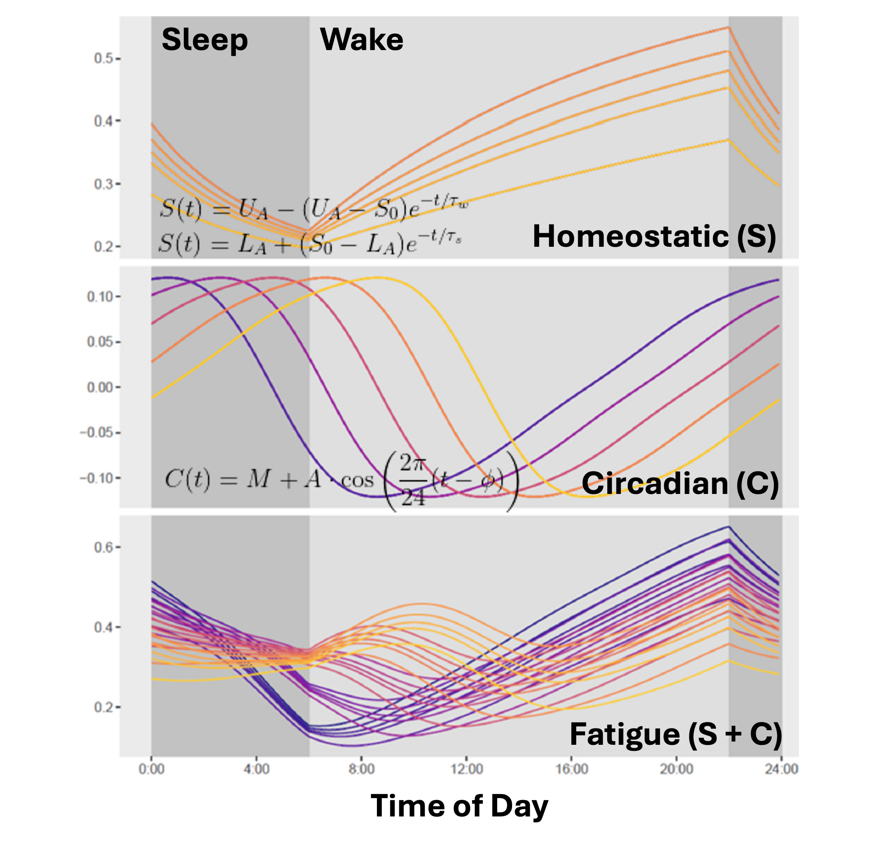
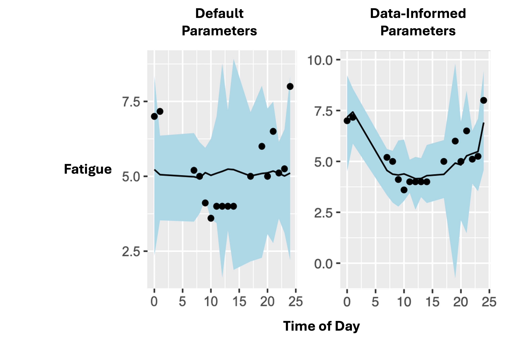

Fatigue risk management in safety-critical industries often relies on a one-size-fits-all approach that use biomathematical models to predict worker fatigue. Our research demonstrates how customised, data-informed models can enhance these predictions by accounting for individual differences in fatigue patterns. This post discusses approaches for improving fatigue forecasting through data-driven solutions that complement existing practices.
Key Takeaways:
- Fatigue patterns can vary significantly across individuals and workforces
- Data-informed models offer opportunities to capture workforce-specific fatigue patterns
- Organisations can enhance their fatigue risk management through customised solutions that account for these differences
Biomathematical Models of Fatigue
Fatigue management in safety-critical work environments is a big issue. Industries like mining, aviation, healthcare, and defence all involve operations that require crew to be working around the clock. And the cost of human error in these environments can be catastrophic. Mistakes can lead to loss of life and have huge financial and societal repercussions. The terms safety critical or high reliability are both often used to describe these types of operations.
Given the around-the-clock nature of the work in these industries and potential for fatigue-related performance impairment to have such severe consequences, there's a clear need for fatigue forecasting. The dominant approach to fatigue forecasting is to use what are called biomathematical models of fatigue. Biomathematical models are used to predict an operator's fatigue based on a number of factors, the most important of them being sleep history and time of day. The figure below shows one of the oldest biomathematical models — the two process model — which is still among the most widely used today. This model assumes that fatigue is determined by two factors: sleep history and time of day. Sleep history is governed by the homeostatic process. Quite simply, fatigue increases when you're awake and decreases when you sleep. In theory, fatigue could change at different rates for different individuals, which is what these different lines represent. Some folks might feel completely restored after 6 hours sleep whereas others might need 9 or 10 to feel completely recovered.

The second factor, time of day, influences the circadian process. There can be individual differences in this too. Some people's circadian rhythm might peak later in the evening (e.g., the proverbial night owl) while others might peak earlier in the afternoon. According to most biomathematical models, the sum of the circadian and homeostatic process determines the operator's fatigue. Importantly, however, when you consider that individual differences very likely exist in the homeostatic process and the circadian process, it's clear that these models don't make a one-size-fits-all forecast. In fact, there's a huge amount of variability in possible fatigue trajectories across the workforce. This is where things get tricky.
Fatigue Risk Management Software
Biomathematical models are widely used in practice. They inform the algorithm underlying many fatigue risk management software programs that are used heavily in industry to manage shiftwork. Managers use these platforms to simulate the fatigue patterns of shift workers based on the times of day they'll be working, how long their shift lasts, when they'll likely be sleeping, and how much sleep they're likely to get. Managers can then use this information to design rosters that ensure the risk of fatigue-related performance impairment is at a minimum. This approach has merit. An advantage of these tools is that they make precise, quantitative predictions about how fatigue should change over time that are directly actionable by managers designing shiftwork. These models are also biologically inspired. The mathematical functions that underpin the model have been developed based on biological processes that actually control fatigue. Hence, there's a fair amount of academic research to support these models.
One challenge, however, with many fatigue risk management platforms is that they typically make one-size-fits-all predictions, which may not capture the full range of individual differences in how fatigue manifests across a diverse workforce. The same is the case in the academic biomathematical modelling literature, where there is often strong assumptions made about how the homeostatic and circadian processes operate. In many cases, it's not clear where these assumptions come from. The parameters that determine, for example, the rate of change in fatigue, or the timing of the circadian peak — there are a whole range of theoretically plausible values for these parameters. How were these parameters chosen?
Typically, when validating mathematical models of human data, analysts would do what's called estimating the model parameters from the data. Instead of imposing strong assumptions about particular parameters, analysts would identify parameters that have uncertain values and/or could plausibly vary across individuals and treat these as unknown quantities. They would then use the data to inform their understanding of these quantities. In this way, they learn from the data. The resulting parameter estimates, now informed by the data, enable predictions to be made about fatigue trajectories that are tailored to the population whose fatigue they want to predict. Ultimately, this use of data-informed parameters allows for more accurate forecasts to be made, which translates into more effective fatigue management practices.
Where Do Default Parameters Come From?
In academic research using biomathematical models, it's important to understand where commonly used assumptions come from. In the biomathematical modelling academic literature, it's common to see papers that rely on "default" parameters, instead of using their data to provide more informed parameter estimates. While this sometimes is a useful and justified tradeoff for addressing certain questions, very few papers actually communicate where the default values come from.
As it turns out, these default values are based on a small set of very underpowered studies from the 80s. One study by Akerstadt and Gillburg that's commonly cited as generating the default values used in a great deal of subsequent research used just 6 participants. Another such study by Borbely and colleagues used 8 participants. These studies also collected data from participants for only up to two days. Now to be fair, these studies aren't at fault. They couldn't have known that the parameter values they published back in the 80s would end up being used so heavily in the decades that followed. These were sleep deprivation studies that brought participants into the lab for two whole days, prevented them from sleeping, and then examined the effects of participants' fatigue on a range of different things. This was expensive and time consuming research and, especially in the 80s, there's no reason why they might have used more participants or kept participants in the lab for longer than two days. Still, there are important questions that need to be asked about whether assumptions about key parameter values from this early research can be used to generate valid forecasts for fatigue trajectories over weeks or even months for a wide array of different types of workers.
Comparing Predictions of Default Values to Data-Informed Parameters
Our team worked with an Australian organisation operating in a safety-critical industry to answer some of these questions. We tracked shift worker sleep and wake times, and their fatigue levels, over the course of several weeks. We then used two versions of a biomathematical model to predict shift worker fatigue levels. In the first version, we applied a standard biomathematical model using the default values. Here, we just estimated a single noise parameter that represented the uncertainty associated with the fatigue estimate. In the second version, we applied a model in which all parameters were estimated. This model therefore allowed for individual differences in these homeostatic and circadian processes — processes that, again, should theoretically differ across individuals.
The graphs below show the results of our comparison. The black dots represent actual fatigue levels (measured through standardised subjective ratings) reported by shiftworkers during operations. The black line shows the model's forecast, while the blue ribbon represents the 95% credible interval of the prediction — in other words, how certain the model is about its forecast.
Left graph (Default Parameters): This model uses the default, one-size-fits-all parameters, and shows higher prediction error that reflects greater uncertainty in individual fatigue.
Right graph (Data-Informed Parameters): This model, incorporating workforce-specific data, captures the dynamic nature of fatigue patterns with a high-level of accuracy. The narrow blue ribbon shows high confidence in these predictions, demonstrating how customised approaches can potentially provide more precise predictions for specific operational contexts.

So the model with data-informed parameters (on the right) was more accurate, not only in terms of the overall prediction (i.e., the alignment between the black dots and the black lines), but also in terms of the precision of this prediction (i.e., the fact that the blue uncertainty ribbons are so narrow). This means the second model is making the correct forecast, and it's doing so with a high degree of confidence.
Of course, you could argue that the model with data-informed parameters is always going to make more accurate predictions because the very same data was used to inform the model's parameters. This is true. It's not a surprise that the second model does a better job. However, the results demonstrate the potential benefits of using data-informed approaches to complement existing fatigue management strategies. While default parameters can be useful for many applications like roster comparisons and assumption checks, our research shows that organisations can gain additional insights through customised, data-informed approaches that account for workforce-specific patterns.
Practical Implications for Organisations
As part of a project led by Dr Micah Wilson, our team developed the Fatigue Impairment Performance Suite — an R package that enables shiftwork managers and practitioners to explore how fatigue forecasts change under different parameter assumptions. This tool provides a starting point for understanding fatigue patterns in your workforce.
However, organisations with their own fatigue data can achieve even better results. We can develop a custom forecasting platform tailored to your specific workforce, leveraging your organisation's unique data to enhance fatigue prediction accuracy. While such customised solutions require an initial investment in data collection and analysis, they can significantly reduce costs associated with fatigue-related accidents and incidents that stem from suboptimal fatigue management.
Next Steps
If you're interested in exploring these opportunities for your organisation, get in touch. For more technical details about our research in this area, see our recent publications: